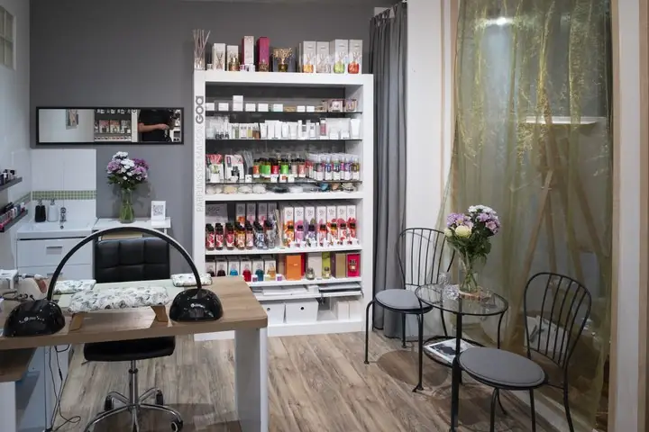
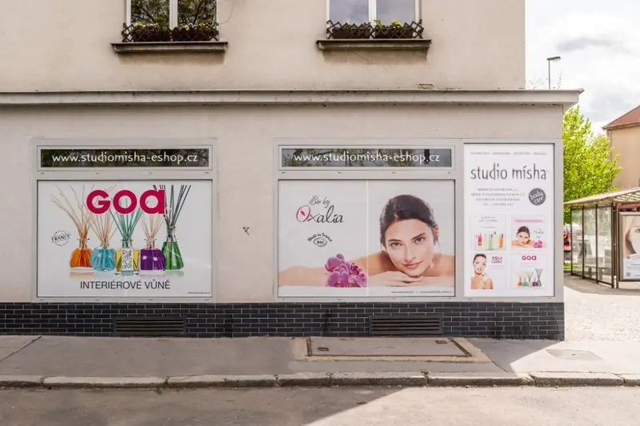
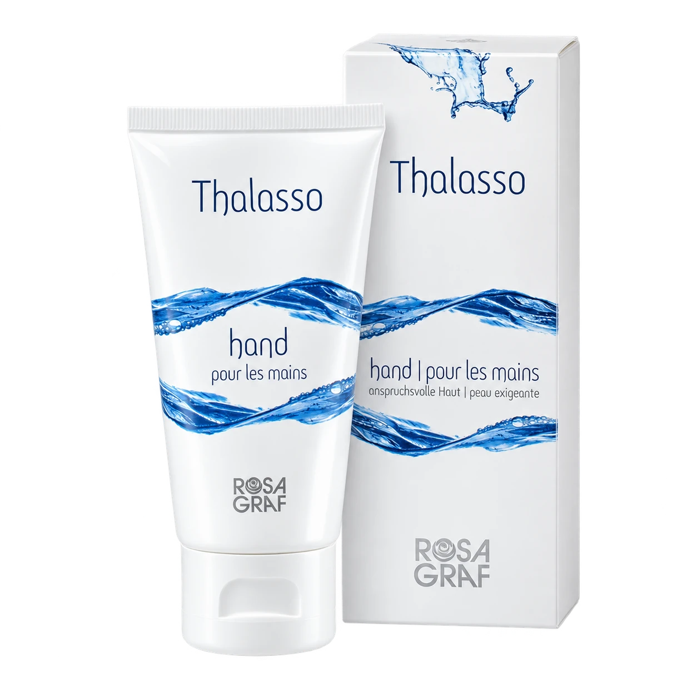
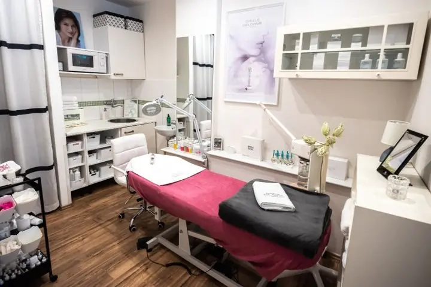

Články, poradna a tipy z e-shopu
Přehledné 30slovné souhrny, průvodce salónními procedurami v Praze 4 – Braníku i doporučení ověřené domácí kosmetiky Rosa Graf, Gisele Delorme a vůní GOA z našeho e-shopu.

Hloubkové čištění pleti v Praze 4: Jak probíhá a jak často na něj chodit
Profesionální hloubkové čištění pleti šetrně uvolňuje ucpané póry, odstraňuje komedony bez rizika jizviček a v kombinaci se séry Rosa Graf či Natinuel udržuje pleť čistou po dobu 4 až 6 týdnů.
Číst celý článek
Problematická pleť a akné v dospělosti: Jak fungují bioceutika a peeling Natinuel
Bioceutické ošetření Natinuel Akné stop kombinuje šetrné chemické peelingy a aktivní látky, které regulují tvorbu kožního mazu, působí protizánětlivě a vyhlazují stopy po akné bez přesušení pleti.
Číst celý článek
Anti-aging ošetření pleti po 35. a 40. roce: Co skutečně funguje bez jehel
Pravidelné anti-aging ošetření s liftingovou masáží obličeje a dekoltu a koncentrovanými séry Gisele Delorme, Rosa Graf či Natinuel zpevňuje kontury, vyhlazuje jemné vrásky a vrací pleti pružnost.
Číst celý článek
Neinvazivní karboxyterapie pleti (RxCarboxy): Okysličení a biostimulace buněk
Neinvazivní karboxyterapie Natinuel RxCarboxy využívá Bohrův efekt k intenzivnímu okysličení buněk zevnitř, čímž bez jediné jehly okamžitě projasňuje zašedlou pleť, zmírňuje otoky a stimuluje tvorbu kolagenu.
Číst celý článek
Milie na obličeji a kolem očí: Proč vznikají a jak je bezpečně odstranit
Milie jsou drobné keratinové cystičky bez vývodu, které nelze běžně vymáčknout. Kosmetička je odstraní sterilní jehličkou během několika vteřin bez jizev a podlitin na jemné kůži kolem očí.
Číst celý článek
Úprava a barvení obočí a řas Binacil: Přirozený výraz očí bez každodenního líčení
Profesionální úprava tvaru obočí a barvení obočí i řas šetrným systémem Binacil zvýrazní pohled na 4 až 6 týdnů, odolá vodě i sportu a ušetří čas při ranním líčení.
Číst celý článek
Dehydrovaná vs. suchá pleť: Jak vrátit pleti vláhu ošetřením Natinuel Hydro You
Dehydrované pleti nechybí tuk, ale voda ve středních vrstvách pokožky. Bioceutické ošetření Natinuel Hydro You obnovuje přirozený hydratační faktor (NMF) a uzamyká vlhkost na dlouhé týdny.
Číst celý článek
Citlivá a reaktivní pleť se sklonem k začervenání: Bioceutické ošetření Natinuel Homeo Rose
Specializované bioceutické ošetření Natinuel Homeo Rose Sensitiv zklidňuje neurogenní zánět citlivé pleti, posiluje křehké kapiláry při kuperóze a rosacee a zvyšuje přirozenou odolnost pokožky vůči teplotním šokům.
Číst celý článek
Šetrná depilace obličeje, rukou a nohou v Praze 4: Hladká pokožka na týdny bez podráždění
Profesionální depilace teplým voskem ve Studiu Mísha odstraňuje chloupky i s kořínkem, takže pokožka obličeje, rukou či nohou zůstává dokonale hladká po dobu 3 až 5 týdnů bez ostrého strniště.
Číst celý článek
Kosmetika, kadeřnictví a masáže pro Podolí, Modřany, Krč a Hodkovičky: Do 10 minut u Přístaviště
Studio Mísha na adrese Branická 573/11 leží jen pár kroků od uzlu MHD Přístaviště, takže z Podolí, Modřan, Hodkoviček, Lhotky i Krče jste u nás tramvají, autobusem nebo autem do 5 až 10 minut.
Číst celý článek
Jak načasovat kosmetiku, barvení vlasů, manikúru a pedikúru před svatbou či plesem
Před důležitou událostí naplánujte hloubkové čištění pleti 10 až 14 dní předem, barvení či melír 7 dní předem a neinvazivní karboxyterapii, manikúru, pedikúru a foukanou 1 až 2 dny před akcí.
Číst celý článek
Balayage, Airtouch nebo Foilyage? Jak vybrat správnou techniku zesvětlení vlasů
Balayage vytváří přirozené přechody volnou rukou, Foilyage dodává výraznější jas díky uzavření do fólií a Airtouch vyfoukává kratší vlasy fénem pro nejjemnější odrost s výdrží 5 až 8 měsíců.
Číst celý článek
Hloubkové čištění vlasů Malibu C: Záchrana pro vlasy zatížené tvrdou vodou a silikony
Krystalický rituál Malibu C bezpečně rozpouští nánosy vápníku, železa, mědi z tvrdé vody i nerozpustných silikonů, čímž vlasům okamžitě vrací lehkost, čistý blond odstín a rovnoměrné chytání barvy.
Číst celý článek
Redken Acidic Bonding Concentrate (ABC): Hloubková obnova vazeb poškozených vlasů
Salonní péče Redken Acidic Bonding Concentrate s kyselinou citronovou a bonderovým komplexem opravuje oslabené vnitřní vazby vlasu, vyrovnává pH po barvení a okamžitě uhlazuje roztřepené délky.
Číst celý článek
Kadeřnictví Praha 4 – Braník: Dámské a pánské střihy, foukaná a barvení Redken
Kadeřnictví ve Studiu Mísha na adrese Branická 573/11 v Praze 4 nabízí dámské i pánské střihy, foukanou a šetrné barvení Redken s cenami transparentně odstupňovanými podle délky vlasů.
Číst celý článek
Jak pečovat o melírované a blond vlasy, aby nežloutly a zůstaly lesklé
Krásná blond vyžaduje šetrné zesvětlení, profesionální tónování po melíru, kyselou péči Redken ABC pro uzavření kutikuly a občasné vyčištění minerálů z vody rituálem Malibu C místo častého fialového šamponu.
Číst celý článek
Barva nebo přeliv na vlasy? Jaký je rozdíl a co vybrat pro první šediny či lesk
Permanentní barva otevírá vlas pro stoprocentní krytí šedin a změnu odstínu u odrostu, zatímco kyselý přeliv tónuje délky bez narušení struktury, dodává zrcadlový lesk a vymývá se plynule.
Číst celý článek
Profesionální mytí a foukaná v Praze 4 Braníku: Objem a lesk vlasů, který vydrží několik dní
Profesionální foukaná přes kulatý kartáč se stylingem Redken uzavře vlasovou kutikulu ve správném směru, čímž vytvoří pružný objem od kořínků a hladký lesk, který drží tvar 3 až 5 dní.
Číst celý článek
Pánský střih v Praze 4 – Braníku: Precizní kadeřnická péče v klidném studiu bez čekání
Pánský střih ve Studiu Mísha v Braníku za 500 Kč probíhá na přesný čas objednání bez čekání ve frontě a respektuje přirozený růst vlasů, aby účes držel tvar i bez složitého ranního stylingu.
Číst celý článek
Přístrojová lymfodrenáž v Praze 4: Účinky na těžké nohy, otoky a celulitidu
Padesátiminutová přístrojová lymfodrenáž postupnou tlakovou vlnou aktivuje lymfatický systém, odvádí přebytečnou vodu a metabolity z dolních končetin, ulevuje těžkým nohám a viditelně vyhlazuje pokožku.
Číst celý článek
Bolest zad a ztuhlá šíje od počítače: Kdy pomůže 30minutová masáž šíje a kdy hloubková masáž
Při akutním přetížení krční páteře a trapézů rychle uleví cílená 30minutová masáž šíje za 500 Kč; při chronické ztuhlosti celých zad a mezilopatkových svalů je ideální 60minutová hloubková masáž.
Číst celý článek
Hloubková masáž s rašelinou a aroma masáž teplou svíčkou: Ideální prohřátí svalů
Teplá přírodní rašelina před hloubkovou masáží prokrví a uvolní chronicky ztuhlá záda, zatímco aroma masáž rozehřátou kosmetickou svíčkou spojuje relaxační tahy s hloubkovou výživou pokožky a aromaterapií.
Číst celý článek
Reflexní masáž chodidel: Jak ulevuje unaveným nohám a harmonizuje celé tělo
Čtyřicetipětiminutová reflexní masáž chodidel uvolňuje přetíženou nožní klenbu a plantární fascii, pomocí přesného tlaku na reflexní zóny harmonizuje orgánové dráhy a navozuje hluboký pocit lehkosti.
Číst celý článek
Sportovní masáž v Braníku: Regenerace po běhu, kole a tréninku u Vltavy
Šedesátiminutová sportovní masáž cíleně prokrvuje přetížené svalové skupiny po běhu, cyklistice či posilovně, urychluje odplavení metabolitů a snižuje riziko svalových křečí i zranění z přetížení.
Číst celý článek
Relaxační aroma masáž v Praze 4: Účinný restart při stresu, vyčerpání a špatném spánku
Šedesátiminutová aroma masáž spojuje plynulé relaxační tahy s účinky čistých esenciálních olejů, čímž snižuje hladinu stresového hormonu kortizolu, zpomaluje tep a prohlubuje spánek.
Číst celý článek
Profesionální pedikúra v Praze 4 – Braníku: Co zahrnuje základní a kompletní péče o nohy
Pravidelná odborná pedikúra ve Studiu Mísha zahrnuje šetrné ošetření zrohovatělé kůže, zkrácení a vyčištění nehtových valů proti zarůstání a volitelný peeling, masáž či aplikaci gellaku.
Číst celý článek
Praskliny na patách a kuří oka: Proč domácí pemza nestačí a jak probíhá odborné ošetření
Tvrdé okraje prasklin na patách a hluboký čep kuřího oka domácí pemza ani náplasti z lékárny neodstraní. Odborné ošetření na pedikúře bezbolestně uvolní tlak už při první návštěvě.
Číst celý článek
Gellak na nohy: Jak dlouho vydrží upravené nehty v létě i na dovolené
Gellak na nehtech u nohou vytvrzený v UV/LED lampě je okamžitě suchý, neodře se v uzavřené obuvi ani v mořské vodě a udržuje zrcadlový lesk po celé 4 až 6 týdnů.
Číst celý článek
Peeling a relaxační masáž nohou: Proč si o ně rozšířit pravidelnou pedikúru
Jemný cukrový či solný peeling po pedikúře vyhladí pokožku nártů a kotníků a připraví ji na 15minutovou masáž nohou, která rozproudí krevní oběh a uvolní unavená chodidla.
Číst celý článek
Japonská manikúra P-Shine: Přírodní cesta k lesklým a pevným nehtům bez laku
Japonská manikúra P-Shine zapracovává do nehtové ploténky čistý včelí vosk, mateří kašičku a křemičitou hlinku, čímž bez jediné kapky chemického laku nehty vyživí, zpevní a dodá jim růžový perleťový lesk.
Číst celý článek
Manikúra s gellakem vs. potažení nehtů gelem: Co vybrat pro přirozeně pevné nehty
Manikúra s gellakem (900 Kč) pružně zpevní kratší až středně dlouhé přírodní nehty na 3 týdny, zatímco potažení nehtů gelem (1 000 Kč) dodá vyšší mechanickou odolnost delším a namáhaným nehtům.
Číst celý článek
Přístrojová a kombinovaná manikúra: Proč je šetrnější k nehtové kůžičce než nůžky
Přístrojová a kombinovaná manikúra pomocí jemných diamantových frézek precizně vyleští nehtové valy nasucho, čímž zabraňuje tvorbě bolestivých záděrů a zpomaluje dorůstání kůžičky.
Číst celý článek
Domácí anti-aging péče po čtyřicítce: Sérum, noční krém a Filling System Rosa Graf Forty+
Německá řada Rosa Graf Forty+ s fytohormony a peptidy cíleně kompenzuje úbytek kolagenu po čtyřicítce — kombinace lehkého séra (585 Kč) a aktivního nočního krému (1 365 Kč) zpevňuje pleť během spánku.
Číst celý článek
Jak podpořit růst a hustotu vlastních řas bez lepení: Sérum Rosa Graf Lash Ultra
Aktivní sérum Rosa Graf Lash Ultra vyživuje vlasové folikuly řas i obočí přímo u kořínků, prodlužuje jejich růstovou fázi a během 4 až 6 týdnů viditelně zahušťuje a prodlužuje přírodní řasy.
Číst celý článek
Ceramidové kapsle Rosa Graf: Rychlá obnova poškozené kožní bariéry a suché pleti
Jednodávkové ceramidové kapsle Rosa Graf Encapsulated Skin Revitalization doplňují mezibuněčné lipidy v nejsvrchnější vrstvě kůže, okamžitě zastavují únik vlhkosti a vyhlazují drsnou, vyčerpanou pleť.
Číst celý článek
Pleťové ampule Rosa Graf (Kaviár, Hyaluron, Q10, Collastin): Intenzivní domácí kúra za 330 Kč
Koncentrované pleťové ampule Rosa Graf (290–330 Kč) obsahují několikanásobně vyšší podíl aktivních látek než běžný krém a umožňují cíleně řešit hydrataci, vrásky, kuperózu i povadlé kontury.
Číst celý článek
Kuperóza a popraskané červené žilky v obličeji: Jak pleť zklidnit v salonu i doma
Při kuperóze a rozšířených žilkách v obličeji je klíčové posilovat pružnost cévních stěn pomocí ampulí Rosa Graf Couperose (330 Kč), chránit pleť před teplotními šoky a využít salónní ošetření Natinuel Homeo Rose.
Číst celý článek
Otoky a vrásky kolem očí: Jak fungují oční krystaly Rosa Graf Gel au Cristal a mikromasáž
Kůže kolem očí je čtyřikrát tenčí než na zbytku obličeje — lehký krystalický gel Rosa Graf Gel au Cristal (1 335 Kč) chladí, odvádí ranní otoky a v kombinaci se salónní mikromasáží vyhlazuje vějířkovité vrásky.
Číst celý článek
Francouzská kosmetika Gisele Delorme: Proč funguje koncept „krása na míru“ v salonu i doma
Pařížská značka Gisele Delorme již přes 35 let staví na personalizovaném vrstvení čistých rostlinných a mořských sér, díky čemuž přesně reaguje na sezónní i hormonální proměny pleti.
Číst celý článek
Regenerační séra s hlemýždím extraktem (Helix Aspersa) a rostlinnými kmenovými buňkami
Sérum Rosa Graf Helix Aspersa s přírodním alantoinem a kyselinou glykolovou urychluje hojení a vyhlazení textury pleti, zatímco Ultimate Stem Cell s rostlinnými kmenovými buňkami chrání dlouhověkost buněk epidermis.
Číst celý článek
Suché a popraskané ruce: Jak kombinovat mořský krém Rosa Graf Thalasso Hand a manikúru
Pokožka na hřbetech rukou má minimum mazových žláz a stárne nejrychleji — výživný krém Rosa Graf Thalasso Hand (525 Kč) s mořskými řasami vytváří neviditelnou ochrannou rukavici bez pocitu mastnoty.
Číst celý článekDomácí pleťové masky Rosa Graf: Kdy sáhnout po mandlové Almond Relax a kdy po mangové Frizzante
Domácí pleťová maska jednou až dvakrát týdně násobí účinek každodenní péče — mandlová maska Almond Relax (690 Kč) zklidňuje suchou a citlivou pleť, zatímco mangová Frizzante (780 Kč) okamžitě rozjasňuje unavenou pokožku.
Číst celý článek
Domácí péče o mastnou a aknózní pleť: Řada Rosa Graf AmintaMed a Teatime
Úspěšné zvládnutí akné stojí ze 70 % na správné každodenní domácí péči — řady Rosa Graf AmintaMed a Teatime regulují kožní maz a působí antibakteriálně bez ucpávání pórů.
Číst celý článek
Francouzské interiérové parfémy a difuzéry GOA z Grasse: Vůně našeho studia u vás doma
Francouzská značka GOA vytváří interiérové parfémy a designové difuzéry (Goatiery) přímo v provensálském městě parfémů Grasse — na našem e-shopu je pořídíte v akčních cenách od 300 do 680 Kč.
Číst celý článek
Podzimní a zimní péče o pleť, vlasy a ruce: Jak předejít vysušení z mrazu a topení
V chladných měsících přejděte u pleti na lipidovější krémy (Zimní krém Rosa Graf 375 Kč, AlegraMed 615 Kč), ruce chraňte krémem Thalasso Hand a zelektrizované vlasy uhladíte kyselou kúrou Redken ABC.
Číst celý článek
Vyhlazující krém na vrásky Rosa Graf Filling System: Jak vyplnit mimické linky zevnitř
Vysoce koncentrovaný krém Rosa Graf Forty+ Filling System využívá zapouzdřené hydratační sféry a peptidy, které v pokožce vážou vodu, zvětšují svůj objem a opticky i strukturálně vyhlazují hlubší vrásky.
Číst celý článek
Aktivní hyaluronový gel a mořská péče Rosa Graf Thalasso Day: Hloubková hydratace bez mastnoty
Kombinace vícezložkového Active Hyaluron Gelu (1 733 Kč) a minerálního denního krému s mořskými řasami Rosa Graf Thalasso Day (1 050 Kč) dodává pleti okamžitou plnost bez těžkého mastného filmu.
Číst celý článek
Ochrana pleti před sluncem a pigmentovými skvrnami: Řada Rosa Graf Suntime (SPF 30, Aprés a Bronzer)
Až 80 % předčasného stárnutí pleti a pigmentových skvrn způsobuje UV záření — řada Rosa Graf Suntime chrání obličej lehkým krémem High SPF 30 (645 Kč), regeneruje po slunění a dodává bezpečný bronz.
Číst celý článek
Alergická a přecitlivělá pleť: Jak ulevit pleti pomocí ampulí Rosa Graf Allergy a krémů AlegraMed
Pro pleť trpící alergickými reakcemi, svěděním a zarudnutím je určena čistá medicínská řada Rosa Graf AlegraMed a zklidňující Ampule Allergy (330 Kč), které obnovují toleranci pokožky.
Číst celý článek
Exkluzivní Sérum krásy (Beauty Serum) a 24h krém Baobab Rosa Graf pro náročnou pleť
Pro nejnáročnější pleť kombinuje Rosa Graf antioxidační sílu afrického baobabu v 24hodinovém krému (1 755 Kč) s koncentrovaným Beauty Serem (2 445 Kč), které obnovuje hutnost a sametový jas pokožky.
Číst celý článek
Aromaterapeutická obnova pleti Gisele Delorme: Arom'Activ Obnova a Zklidňující krém Riche
Řada Gisele Delorme spojuje čisté esenciální oleje, rostlinné výtažky a mořské biotechnologie — v našem e-shopu pořídíte Arom'Activ Obnova (1 250 Kč) i Zklidňující krém Riche (2 145 Kč) ve zvýhodněné akci.
Číst celý článek
Přírodní kosmetika BIO Kúr v Praze 4: Šetrné bio ošetření pro těhotné, kojící i citlivou pleť
Kosmetické ošetření s přírodní řadou BIO Kúr využívá certifikované rostlinné extrakty a za studena lisované bio oleje, takže je naprosto bezpečné i pro nastávající maminky, kojící ženy a reaktivní pleť.
Číst celý článek
Zarůstající nehty na nohou: Jak správně stříhat nehty a proč pomáhá pravidelná pedikúra
Nejčastější příčinou zarůstání nehtů na palcích je vystřihávání nehtů do kulata a úzká špička obuvi — na odborné pedikúře ve Studiu Mísha nehtové valy šetrně vyčistíme a nehet vytvarujeme do správné roviny.
Číst celý článek
Oteklé kotníky z dlouhého stání, sezení či cestování: Kombinace lymfodrenáže a reflexní masáže
Při otocích kotníků a lýtek z dlouhého stání, sezení či letu nejlépe funguje spojení 50minutové přístrojové lymfodrenáže (750 Kč), která odvede stagnující tekutinu, a reflexní masáže chodidel (700 Kč).
Číst celý článek
Kosmetika Praha 4: Podle čeho vybrat kvalitní kosmetický salon a proč navštívit Studio Mísha
Při výběru kosmetiky v Praze 4 sledujte délku praxe kosmetičky, používané značky a lokální hodnocení. Studio Mísha v Braníku získalo 1. místo Provozovna roku Prahy 4, má praxi od roku 1992 a spolupracuje s dermatoložkou.
Číst celý článek
Kosmetika Praha 4 – přehled a srovnání ošetření pleti podle věku a typu pleti
Pro mladou a problematickou pleť je ideální Čištění Klasik (650 Kč) nebo Natinuel Akné stop (750 Kč), pro pravidelnou měsíční péči Regenerace Rosa Graf (950 Kč) a pro náročný lifting rituál Gisele Delorme (1 350 Kč).
Číst celý článek
Kadeřnictví Praha 4: Proč zvolit salon pracující se značkou REDKEN a čištěním Malibu C
Kadeřnictví ve Studiu Mísha v Praze 4 – Braníku spojuje precizní střihy s americkou profesionální vlasovou kosmetikou REDKEN, kyselou obnovou vazeb ABC a krystalickým čištěním vlasů Malibu C.
Číst celý článek
Kam na masáž a přístrojovou lymfodrenáž v Praze 4: Průvodce pro Braník, Podolí, Krč a Modřany
Studio Mísha v Praze 4 – Braníku nabízí 8 cílených procedur od 30minutové masáže šíje (500 Kč) a přístrojové lymfodrenáže (750 Kč) až po 60minutové hloubkové, sportovní a rašelinové masáže (950–1 000 Kč).
Číst celý článek
Pedikúra a manikúra Praha 4: Kompletní přehled péče o ruce a nohy ve Studiu Mísha
Ve Studiu Mísha v Praze 4 – Braníku se o vaše ruce a nohy starají zkušené specialistky Kačka (od r. 2014) a Nela (od r. 2016) — od přístrojové manikúry (500 Kč) a P-Shine (700 Kč) po kompletní pedikúru.
Číst celý článek
Studio Mísha Praha 4: Držitel 1. místa Provozovna roku v Praze 4 s praxí od roku 1992
Studio Mísha založila v roce 2008 v rodném Braníku kosmetička Michaela Svobodová (praxe od roku 1992). Salon získal 1. místo v soutěži Provozovna roku Prahy 4 a spojuje kosmetiku, kadeřnictví, masáže a nehtovou péči.
Číst celý článekDopřejte si péči ve studiu i doma
Zavolejte nám na +420 739 990 333 pro rezervaci termínu v Braníku nebo si vyberte profesionální kosmetiku v našem e-shopu.